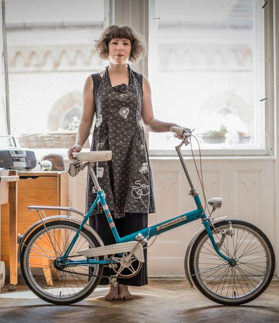

| home | about | projekte | impressum |
|---|---|---|---|
die klapprad-werkstatt
das comeback der klappräder.eine werkstatt mit charme.Hi, wir sind Serin und Tanja. Wir haben unsere Leidenschaft zum Beruf gemacht und haben uns auf die Restauration alter Klappfahrräder spezialisiert. Wir erwecken dein altes Klappfahrrad wieder zum leben und sind stets mit Herz dabei. Ob Rostentfernung, Farbwechsel oder totales umtuning. Mit deinem individualsierten neuen alten Klapprad, wirst du ein echter Hingucker sein. Wir freuen uns auf deinen Besuch in unserer Werkstatt. Eure Serin und Tanja |
 |